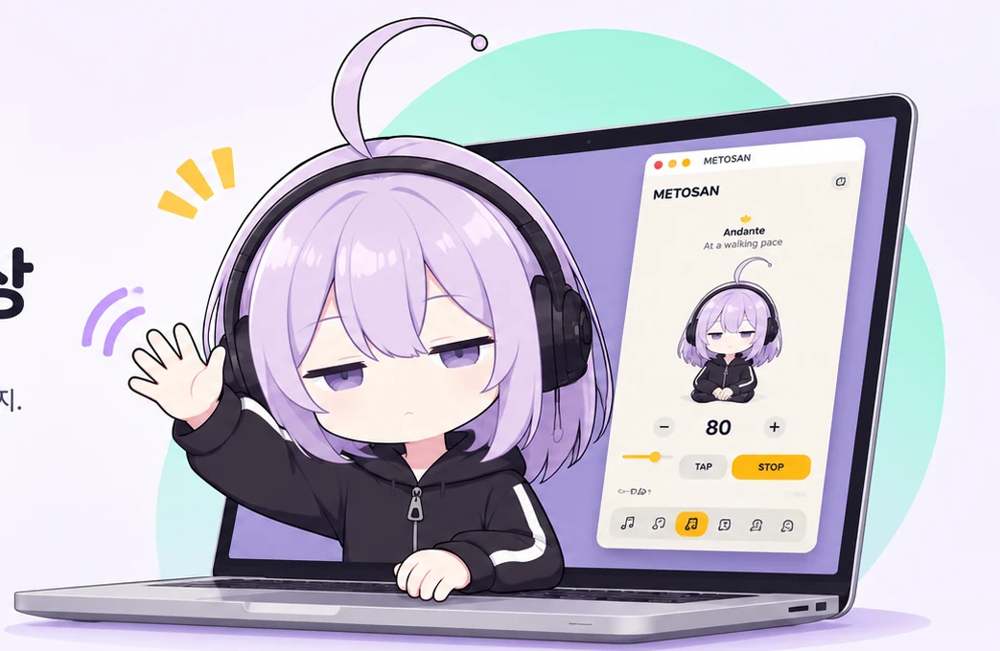
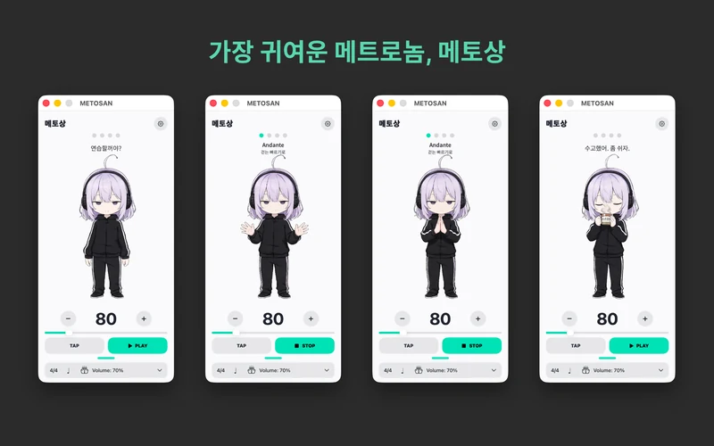

METOSAN FOR macOS
가장 귀여운
메트로놈, 메토상
귀여운 캐릭터와 함께 박자를 맞춰보세요.
다양한 리듬과 사운드, 취향에 맞는 색상 설정까지.
매일의 음악 연습을 조금 더 즐겁게.
macOS 14.0 이상
앱스토어 공개 후 다운로드 링크가 연결됩니다.

귀여운 캐릭터와 함께 박자를 맞춰보세요.
다양한 리듬과 사운드, 취향에 맞는 색상 설정까지.
매일의 음악 연습을 조금 더 즐겁게.

박수, 메트로놈, 우드블록, 하이햇 사운드 중 선택하고, BPM과 리듬 패턴을 조절하세요. 배경색과 포인트 색상도 원하는 대로 바꿀 수 있어요.

문의나 개선 의견이 있다면 이메일로 알려주세요.